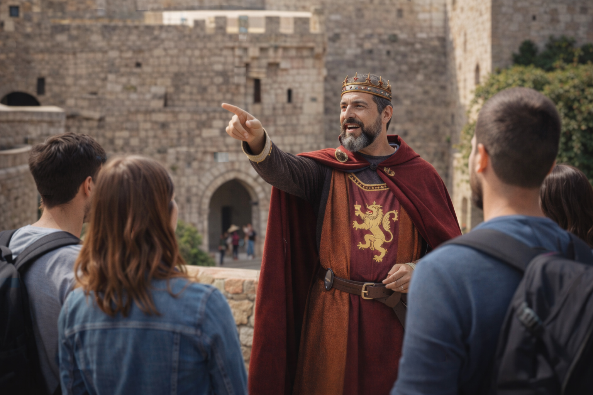
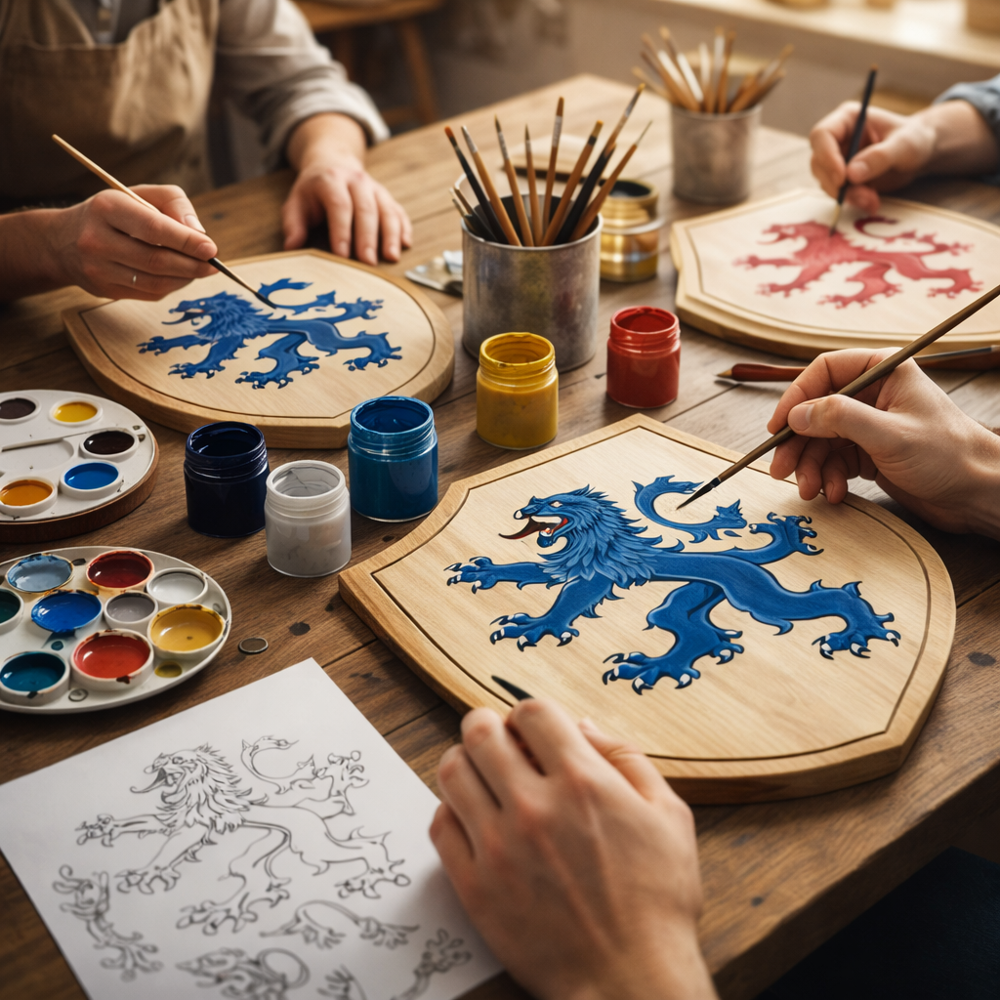
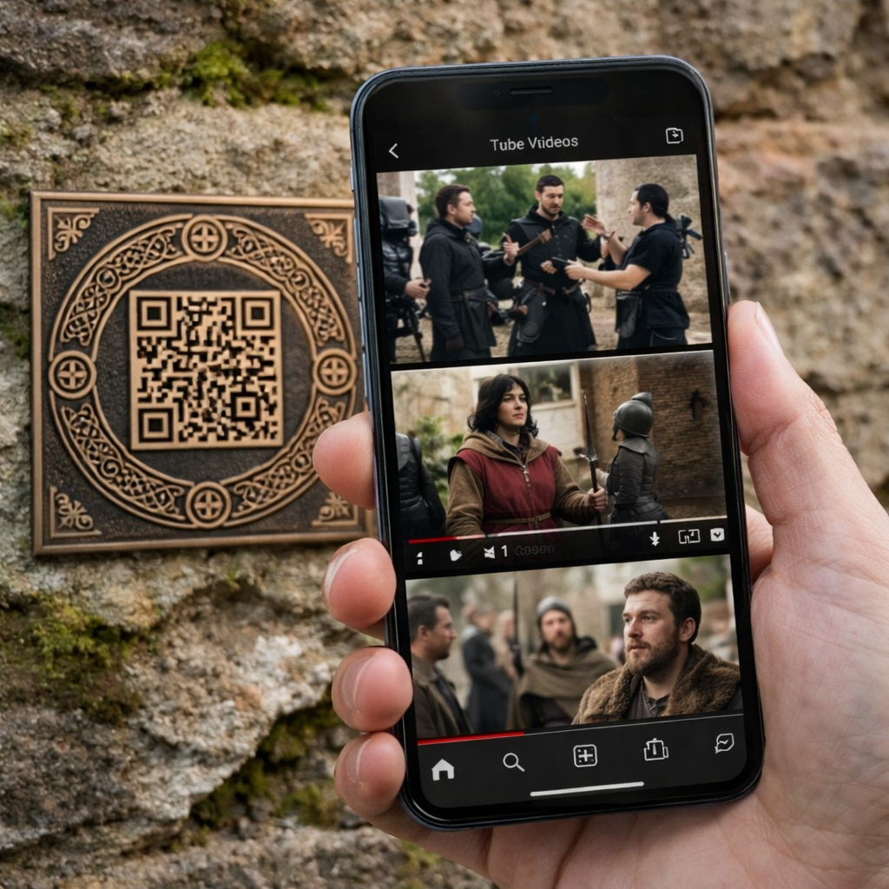
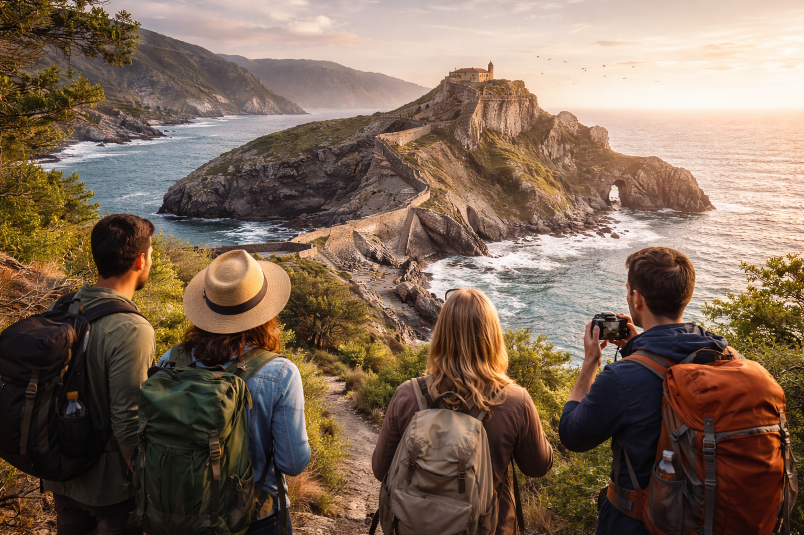

Experiencias Teatralizadas
En determinados puntos del itinerario, la historia cobrará vida a través de visitas teatralizadas que recrean escenas y momentos clave de la serie, haciéndote partícipe de la narración.
A lo largo de España a través de los Siete Reinos, vivirás una experiencia completa que combina turismo cultural, escenarios de cine y actividades inmersivas inspiradas en el universo de Juego de Tronos. En cada etapa del recorrido conectarás la ficción con la historia real de los destinos visitados.
En determinados puntos del itinerario, la historia cobrará vida a través de visitas teatralizadas que recrean escenas y momentos clave de la serie, haciéndote partícipe de la narración.

Durante el recorrido, accederás a contenidos exclusivos mediante códigos QR, donde encontrarás escenas del rodaje, imágenes, curiosidades y material audiovisual directamente en tu móvil.

Participarás en un taller creativo donde conocerás el significado de los símbolos medievales y diseñarás tu propio escudo, inspirado en las casas nobles de Juego de Tronos.

Explorarás espacios naturales emblemáticos como costas, acantilados y entornos protegidos que sirvieron de escenario para la serie, combinando paisaje, fotografía y divulgación.
